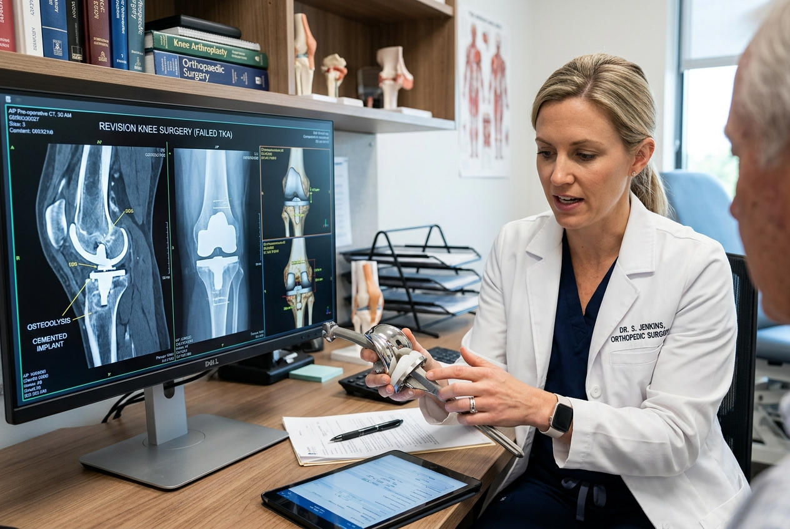
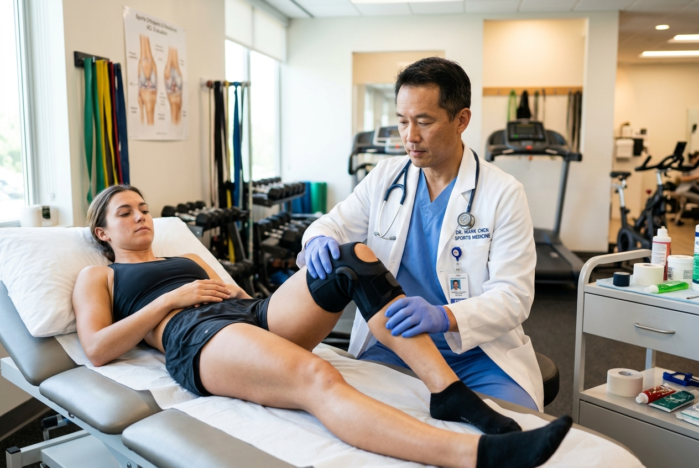
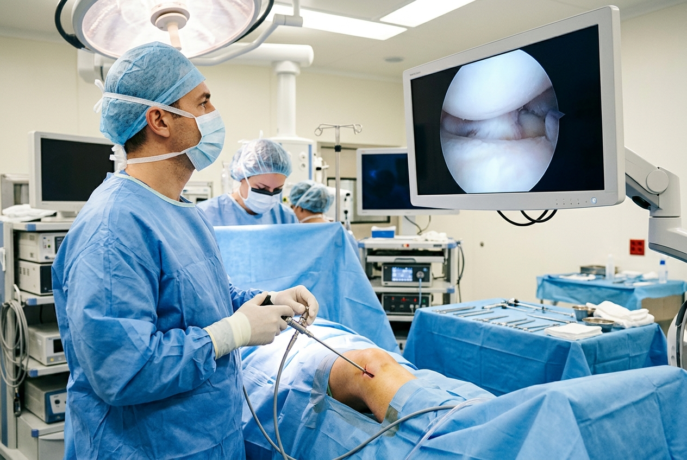

While knee replacement remains Dr. Madhuram Chowdry’s primary surgical specialty, our clinical department delivers expert diagnostic and surgical care for all major musculoskeletal conditions in Mysuru.
The hip is a deep ball-and-socket joint that supports substantial body weight during walking and standing. When hip cartilage deteriorates or blood supply to the femoral head is interrupted, severe groin and buttock pain develops, leading to a restricted limp.
Dr. Madhuram Chowdry performs cementless and hybrid total hip replacements using high-wear ceramic-on-crosslinked-polyethylene bearings, restoring pain-free walking mechanics.

Accidental fractures require immediate clinical stabilization, accurate anatomical reduction, and rigid internal or external fixation to enable early joint motion and prevent permanent deformity or non-union.

Athletic activities and sudden twisting incidents frequently result in ligament tears and intra-articular cartilage damage. With fellowship training in sports medicine, Dr. Madhuram Chowdry emphasizes anatomical reconstruction and functional sports rehabilitation.

Not every joint ache warrants surgical replacement. For mild to moderate degenerative joint disease (Kellgren-Lawrence Stages 1 to 3), Dr. Chowdry designs multi-modal preservation strategies to relieve pain, slow cartilage breakdown, and preserve native joint architecture.

The shoulder is the most mobile joint in the human body, making it susceptible to rotator cuff tears, chronic impingement, and severe stiffness. Dr. Chowdry offers specialized diagnostic and therapeutic solutions for shoulder pain and restricted arm elevation.

Consult Dr. Madhuram Chowdry at A R Hospital for comprehensive joint evaluation, fracture review, or second opinion.